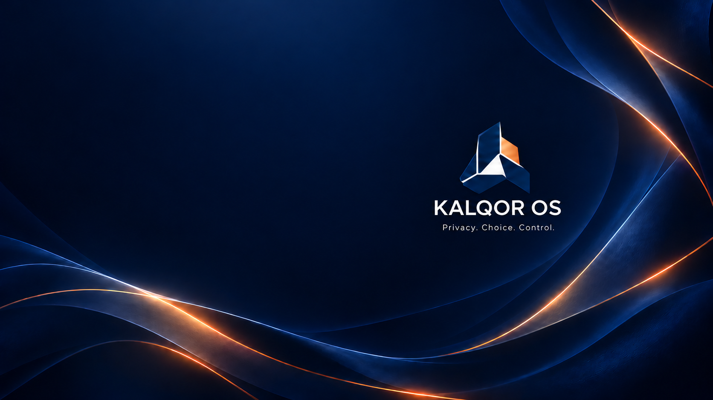

Light on the system.
An LXQt desktop built on Debian, with KALQOR artwork and a clear, practical workspace.
Meet the project ↗YOUR DESKTOP. YOUR DIRECTION.
A lightweight Linux desktop with a deliberate approach to privacy. Choose how you connect. Keep control of your everyday computing.
The first test ISO has been built. Public release and installation validation are still ahead.
Release status →A MORE INTENTIONAL DESKTOP
Familiar Linux foundations, a focused desktop, and network choices that are explained rather than hidden.
An LXQt desktop built on Debian, with KALQOR artwork and a clear, practical workspace.
Meet the project ↗Normal, Tor, and Offline session options. Planned I2P integration opens another direction for private-network access.
Compare the modes ↗A signed APT repository delivers KALQOR packages, alongside Debian’s base-system and security updates.
Understand updates ↗
OFFICIAL KALQOR ARTWORK · DESKTOP WALLPAPERA SPACE OF YOUR OWN
Debian’s package ecosystem and a lightweight Qt desktop form the foundation. KALQOR brings its own identity, boot and login artwork, and connection choices.
Explore the preview →Artwork shown; desktop layouts may differ between development builds.
CONNECTION, WITH CONTEXT
Use your normal internet connection without KALQOR’s Tor routing restrictions. Your usual network and service privacy policies apply.
Interactive explanation only. This website does not change your connection or route your traffic.
FROM THE PROJECT
The KALQOR APT repository serves signed release and branding packages.
Update documentation ↗IN VALIDATIONThe live image has been built. Boot, installer, and network-mode checks remain part of release validation.
Preview information ↗PLANNEDExploring access to the I2P network through explicitly configured applications and services.
Read the scope ↗